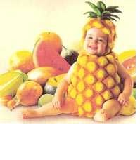
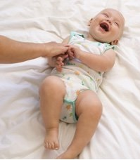

NUTRICIÓN
Obesidad incrementa en niños colombianos
10/09/2912
Cuando se habla de sobrepeso, muchos quisiéramos pensar que es un tema lejano. Pero, ¿quién de nosotros no ha tenido un hermano, un hijo o un familiar con algo de sobrepeso en algún momento de su vida?
Muchos desconocemos en qué momento sucede, pero es muy frecuente ver niños ‘gordos’ en el parque o en eventos familiares. Al principio, “este niño se ve divino, ¡está repuestico!”, dicen las abuelas; con el tiempo, los padres no saben qué hacer para evitar que el aspecto rozagante que se adquiere en los primeros años de vida se convierta en un problema futuro. Y es que no es cuestión de imagen. Según la Organización Mundial de la Salud (OMS), la obesidad es uno de los problemas de salud pública más graves del siglo XXI, definida como una acumulación anormal o excesiva de grasa, que puede ser perjudicial para el estado de salud.
SALUD
Estas son las subespecialidades pediátricas
10/09/2912
Desde hace unos 30 años la pediatría general viene siendo apoyada por diversas subespecialidades con el objetivo de garantizar mayor eficacia y eficiencia en el diagnóstico y tratamiento de enfermedades. Sin embargo, esta evolución no se ha dado de manera fortuita. Son varias las razones que explican por qué el pediatra general está rodeado de un grupo de especialistas que han centrado su análisis en determinadas partes del cuerpo del infante e, incluso, en enfermedades y patologías que los aquejan. Según comenta la nefróloga pediatra Natalia Mejía Gaviria, las subespecialidades se presentaron primero en la medicina interna, dedicada a la atención integral de adultos enfermos, y luego se empezó a copiar el mismo modelo en la medicina infantil. “En ambos casos el fin fue, y continúa siendo, el mismo: buscar la excelencia en la atención de los pacientes a través del estudio minucioso de los detalles, es decir, pasar de lo general a lo particular”

SALUD
Los beneficios de las cosquillas
10/09/2912
Las cosquillas son un antídoto contra el mal genio, la terquedad, la tristeza y el estrés, y según la edad de los niños, tienen múltiples beneficios en el organismo.
Según Rodrigo Riaño, máster en Neurociencias del Instituto de Neurociencias y Salud Mental de Barcelona y director del Departamento de Psicología del Politécnico Grancolombiano, desde el punto de vista neurológico, desde que nace el bebé, su cerebro está preparado para detectar las cosquillas ya que se originan por un estímulo táctil.
Durante los primeros meses de vida, y hasta los 3 años, favorecen la maduración de las vías nerviosas de tipo sensitivo, que son las encargadas de informar al cerebro sobre la llegada de ciertos estímulos, como un pinchazo, calor, frío, entre otros. Estas, a su vez, permiten el desarrollo de las vías motoras, aquellas que desde la corteza cerebral envían información a distintas partes del cuerpo para reaccionar frente a estos estímulos, en este caso las cosquillas.

ESTA PAGINA FUNCIONARA TODOS LOS DIAS PARA NUESTROS BEBES